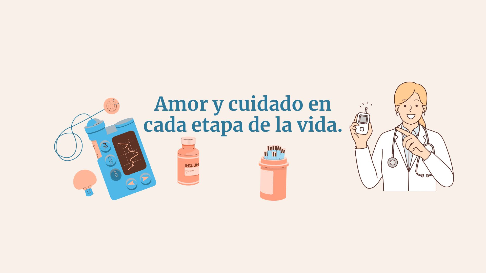

Brindar acompañamiento integral en el cuidado nutricional y emocional de madres en el periodo de posparto y lactancia, así como de personas con necesidades alimentarias especiales, promoviendo hábitos saludables, información confiable y apoyo consciente para mejorar su calidad de vida.
Ser una plataforma referente en orientación nutricional y cuidado en salud, reconocida por su compromiso con la inclusión, la educación alimentaria y el bienestar de madres lactantes y personas con condiciones médicas especiales, generando impacto positivo en sus procesos de recuperación y desarrollo.
Garantizar la salud, el bienestar y el rendimiento de las personas con necesidades alimentarias específicas, como madres en etapa de posparto y lactancia, así como quienes viven con enfermedades crónicas, requiere atención personalizada y cuidados diferenciados. Por ello, surge la necesidad de crear una herramienta informativa y educativa que promueva el autocuidado, la conciencia nutricional y la inclusión, contribuyendo a mejorar la calidad de vida de estas poblaciones y apoyando su evolución positiva tanto a nivel físico como emocional.